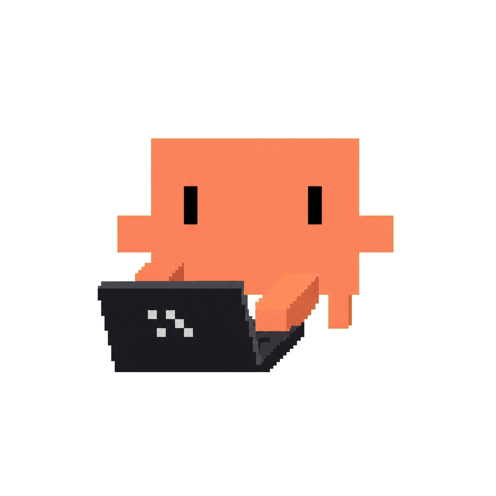
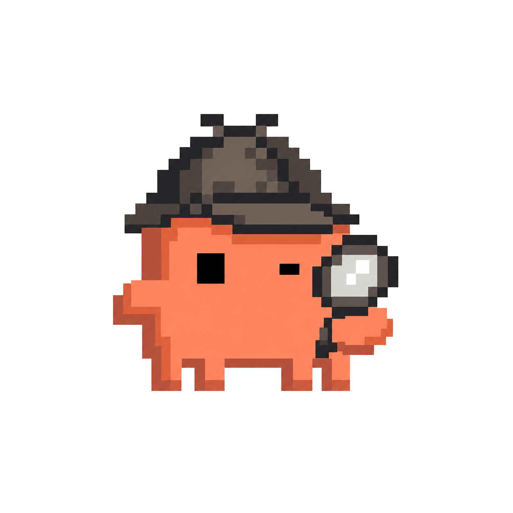
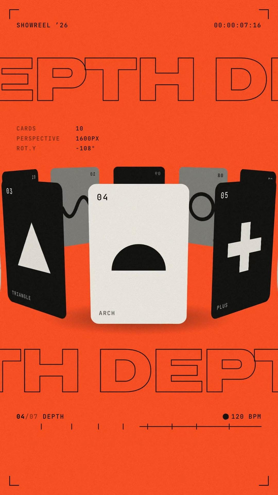
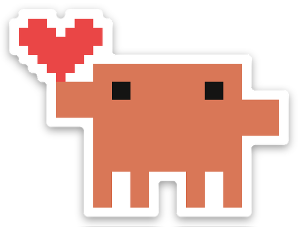
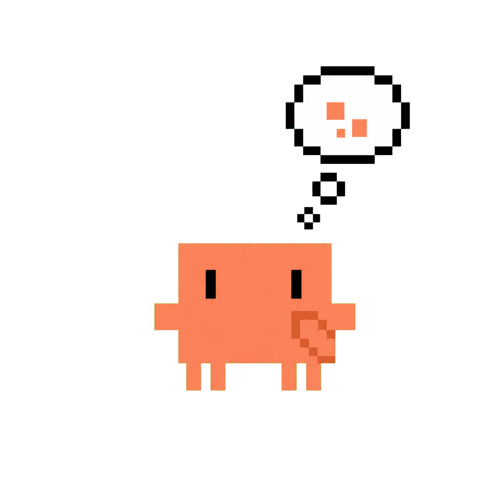
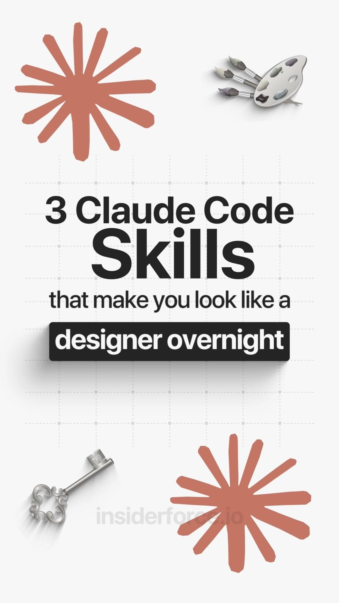
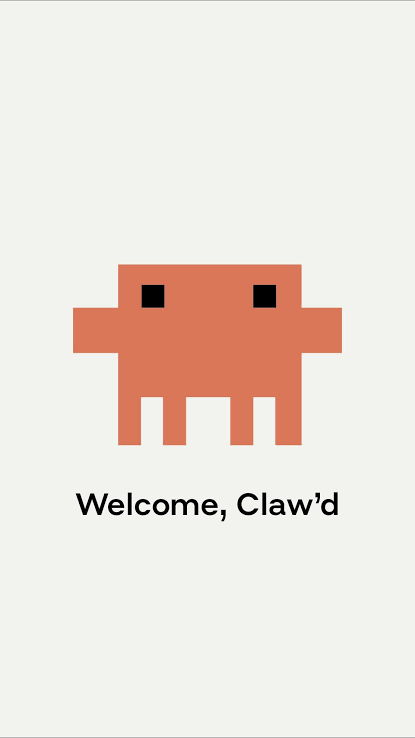
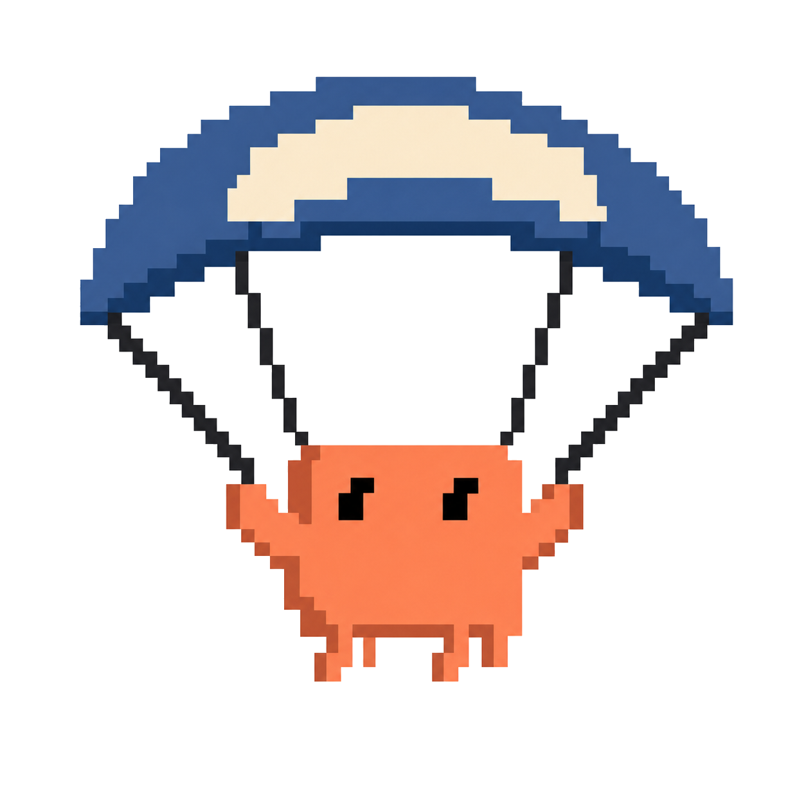
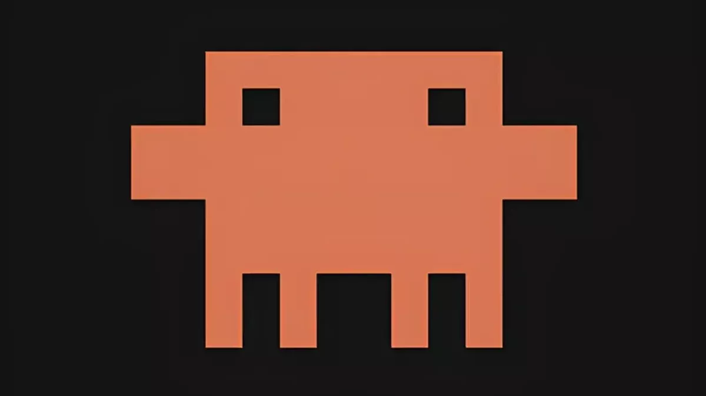

IMAGEN · 564 × 1003Figura neuronalLíneas luminosas, nodos y cubos en profundidad.Revelar cómo se conectan los datos y las etapas del sistema.Abrir imagen ↗Fuente ↗pin-1128433250395037066
IMAGEN · 736 × 736Cerebro y herramientas conectadasElemento central con dispositivos y libros alrededor; halo de luz inferior.Traducir esta composición a brief, guion, revisión y video.Abrir imagen ↗Fuente ↗pin-1057008975072047609
PÓSTER DE VIDEO · 464 × 832Equipo en perspectivaPersonas alrededor de una mesa; vista isométrica y gráficos elevados.Tomar la profundidad para mostrar coordinación entre persona y agente.Abrir imagen ↗Fuente ↗pin-1035898351811759640
PÓSTER DE VIDEO · 464 × 832Pantalla en diagonalAcentos naranja/cian y foco selectivo sobre gráficos de mercado.Tomar encuadre y detalle; recrearlos con el proceso de marketing.Abrir imagen ↗Fuente ↗pin-944770828097507675
PÓSTER DE VIDEO · 800 × 1422Chip de IA · RawpixelChip luminoso, circuitos y puntos cálidos sobre una superficie oscura.Referencia de materiales y luz. Póster público de un video Premium.Abrir imagen ↗Fuente ↗rawpixel-17121933
IMAGEN · 1254 × 1254Clawd. WorkingResultado de la búsqueda: personaje pixelado o pieza gráfica de Claude Code.Muestra de búsqueda; referencia secundaria de expresividad o simplificación.Abrir imagen ↗Fuente ↗search-01
IMAGEN · 1254 × 1254Clawd. CoffeeResultado de la búsqueda: personaje pixelado o pieza gráfica de Claude Code.Muestra de búsqueda; referencia secundaria de expresividad o simplificación.Abrir imagen ↗Fuente ↗search-02
IMAGEN · 1254 × 1254Clawd. SherlockResultado de la búsqueda: personaje pixelado o pieza gráfica de Claude Code.Muestra de búsqueda; referencia secundaria de expresividad o simplificación.Abrir imagen ↗Fuente ↗search-03
IMAGEN · 1254 × 1254Clawd. CookingResultado de la búsqueda: personaje pixelado o pieza gráfica de Claude Code.Muestra de búsqueda; referencia secundaria de expresividad o simplificación.Abrir imagen ↗Fuente ↗search-04
PÓSTER DE VIDEO · 1080 × 1920Tarjetas y tipografía naranjaPóster naranja con tarjetas negras y crema en perspectiva.Referencia prioritaria de esta búsqueda para contraste y volumen.Abrir imagen ↗Fuente ↗search-05
IMAGEN · 600 × 456Clawd heartResultado de la búsqueda: personaje pixelado o pieza gráfica de Claude Code.Muestra de búsqueda; referencia secundaria de expresividad o simplificación.Abrir imagen ↗Fuente ↗search-06
IMAGEN · 1254 × 1254Clawd. ThinkingResultado de la búsqueda: personaje pixelado o pieza gráfica de Claude Code.Muestra de búsqueda; referencia secundaria de expresividad o simplificación.Abrir imagen ↗Fuente ↗search-07
IMAGEN · 1254 × 1254Clawd. SleepingResultado de la búsqueda: personaje pixelado o pieza gráfica de Claude Code.Muestra de búsqueda; referencia secundaria de expresividad o simplificación.Abrir imagen ↗Fuente ↗search-08
PÓSTER DE VIDEO · 1080 × 1920Jerarquía tipográfica claraFondo claro, título grande y objetos pequeños alrededor.Referencia de orden y lectura rápida, conservando la marca propia.Abrir imagen ↗Fuente ↗search-09
IMAGEN · 415 × 738Síntesis y espacio librePersonaje pequeño sobre un campo claro con texto breve.Tomar la simplicidad y el espacio disponible.Abrir imagen ↗Fuente ↗search-10
IMAGEN · 1254 × 1254Clawd. ParaglidingResultado de la búsqueda: personaje pixelado o pieza gráfica de Claude Code.Muestra de búsqueda; referencia secundaria de expresividad o simplificación.Abrir imagen ↗Fuente ↗search-11
IMAGEN · 1200 × 675Anthropic Boosts Claude Code Limits 25%—But the Catch Is 17%Resultado de la búsqueda: personaje pixelado o pieza gráfica de Claude Code.Muestra de búsqueda; referencia secundaria de expresividad o simplificación.Abrir imagen ↗Fuente ↗search-12